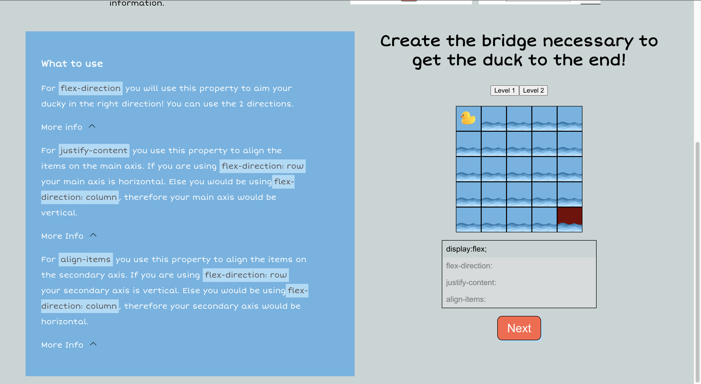
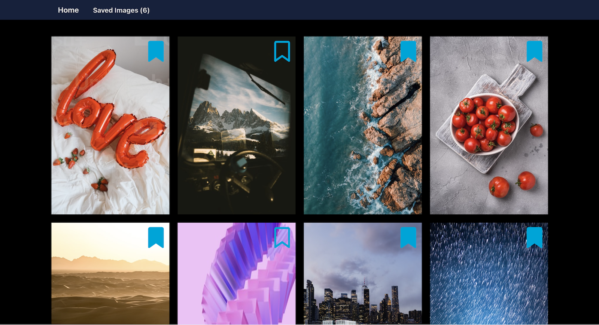
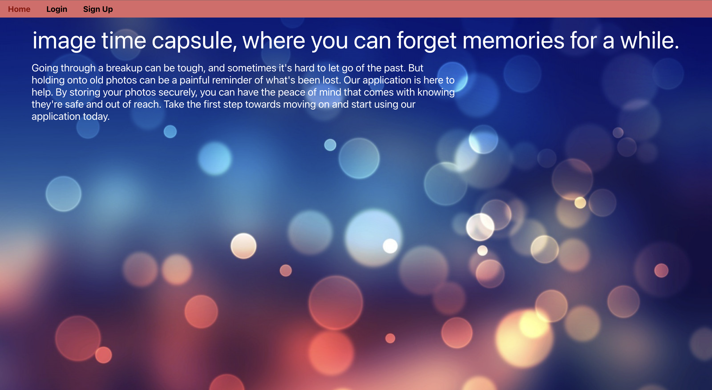
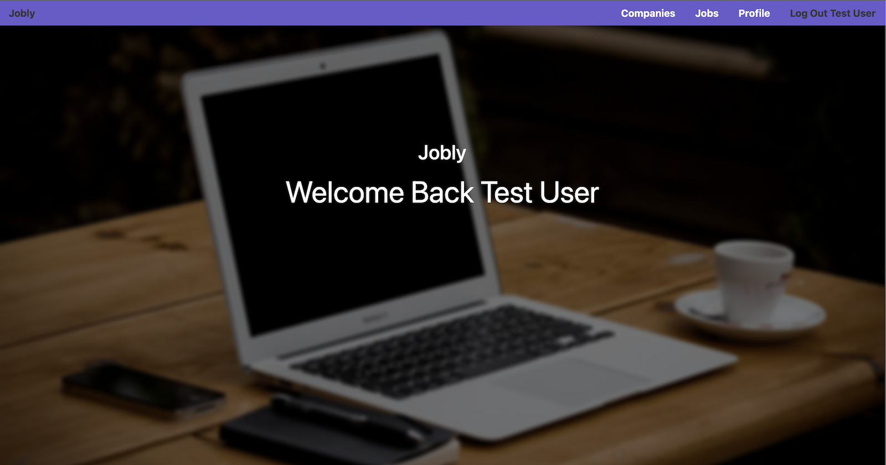
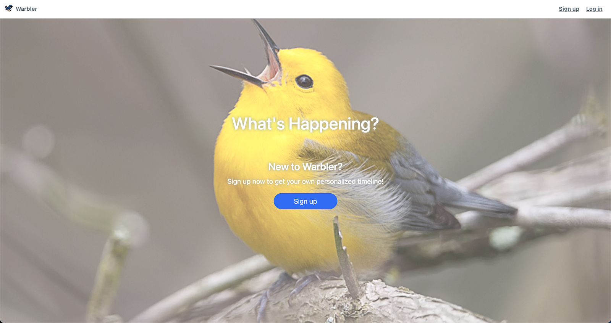
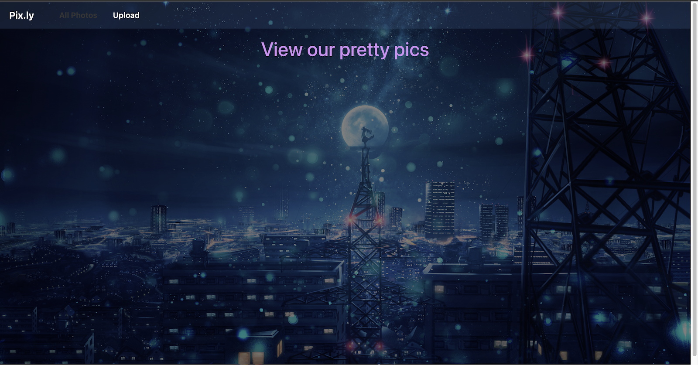
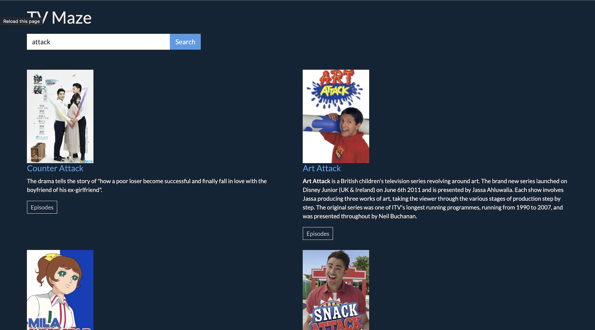

Projects
I have continued to polish my skills beyond my bootcamp experience, which concluded in June 2022. Since then, I have been working on personal projects and participating in online coding communities to stay current with industry trends and best practices. I am confident that my passion for coding and dedication to continuous learning make me a strong candidate for any Full-stack web development role

This apllication is live! Click on the image or title for a demo!
Flexduck is an educational game designed to help new front-end developers learn how to use the CSS layout model, flexbox. The game teaches players how to use the flexbox directions, including justify content, align items, and flex-direction.
I acquired a comprehensive understanding of the underlying mechanisms governing flexbox properties and the arduous developmental efforts that culminated in their realization. Our team worked on the app continuously for a period of three days, during which we gained valuable insights into task delegation and streamlining our development procedures to enhance efficiency.

This apllication is live! Click on the image or title for a demo!
I was part of a team that participated in Quackathon, and I am proud to say that we secured second place in the competition. To avoid API rate limits during MVP building or demonstration, we saved image data in local storage using an object with id:url pairs collected from a previously fetched Unsplash API call.
I learned new skills and techniques, and everyone made significant contributions to the final product. We frequently collaborated through pair programming, and often merged work done by one user with another's.
February, 2023 - On Going

This apllication is live! Click on the image or title for a demo!
This is an app that stores images for you and only
let those photos available for view and download after the user picked date has been reached. The concept is to help people get over their ex, or anyone that they miss but cannot let go due to looking at photos of them.
I improved my ReactJS and Flask skills for this project while comparing session cookies versus JSON Web Tokens (JWT) and ultimately chose JWT. I also gained experience deploying and configuring various AWS services such as Lambda, RDS, Elastic Beanstalk, and S3, along with securing access using security groups. Furthermore, I deployed Elastic Beanstalk on HTTPS with a custom domain for added functionality.
March, 2023 - Reworked: Design, Located and resolved bugs
Jobly

This is a job board application that allows users to register for an account, log in, and apply for jobs. My partner and I developed this application as a means to hone our skills in test-driven development, achieving a remarkable 99.95% test coverage. I invite you to review my contributions on GitHub to see my work. The repository includes instructions on how to build and run the application, as well as how to run tests.
February, 2023 - Launched on AWS

This application is live! Click on the image or title for a demo!
This is a social media app that allow users to register an account, log in, log out, update profile photos and account information. You can also add, delete, like, and unlike messages. This project is where I fell in love with and mastered SQLAlchemy. Also ran in AWS cloud through Elastic beanstalk

I developed a photo sharing application that gave me the opportunity to learn Amazon AWS for the first time. Although there was a learning curve involved, the experience was immensely enjoyable.

Tv-maze is a TypeScript and vanilla HTML web application that utilizes a third-party API to retrieve information about episode lists of TV shows based on user search queries. The application's search bar allows users to input their queries, and the response is rendered with show image, title, and description of the show. Additionally, the application features an episodes button, which displays the episode name, season number, and episode number when clicked.